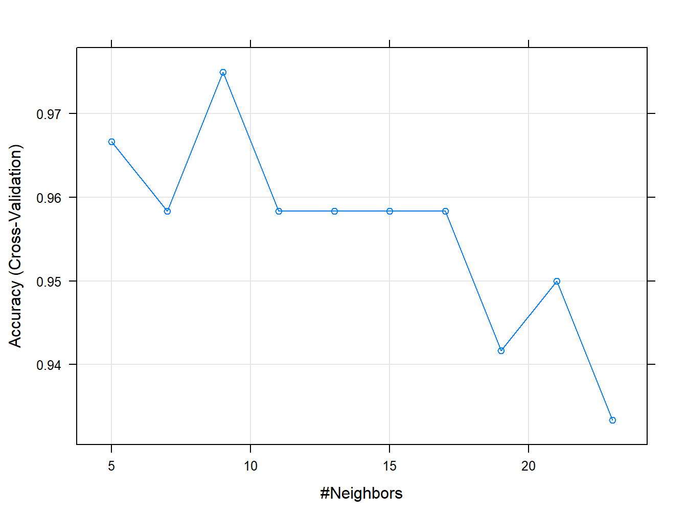

4 Comparación entre Modelos
Hasta ahora hemos visto cómo comparar el ajuste de un modelo para diferentes hiperparámetros, por ejemplo, en el caso RDA se escoge el modelo con mayor Accuracy para diferentes combinaciones de \((\lambda, \gamma)\); o la selección del \(K\) óptimo en KNN. Este enfoque lo que hace es estudiar la distribución del Accuracy (o cualquier otra medida de precisión como el Kappa) para cada modelo independientemente (within-model).
El enfoque que abordamos en esta sección es la comparación de las distribuciones de estas medidas de precisión, ahora entre los diferentes modelos (between-models).
4.1 Comparando según Accuracy
Empezamos comparando los modelos ajustados en la Sección 3. Vamos a usar los mismos datos de entrenamiento para cada modelo, y además “plantaremos una semilla” para que el remuestreo se haga en los mismos conjuntos.
## Loading required package: lattice## Loading required package: ggplot2library(ISLR)
df <- Default[, c("income", "balance", "default")]
set.seed(123)
train.ID <- createDataPartition(df$default, p = 0.8, list = FALSE)
train_df <- df[train.ID, ]
test_df <- df[-train.ID, ]
# definimos como control una validación cruzada con 10 hojas y repeticiones
fit_control <- trainControl(method='repeatedcv', number = 10, repeats = 5)LDA:
# LDA
set.seed(321)
model_lda_def <- train(default ~.,
data = train_df,
method = "lda",
trControl = fit_control)QDA:
# QDA
set.seed(321)
model_qda_def <- train(default ~.,
data = train_df,
method = "qda",
trControl = fit_control)RDA:
# RDA
mi.grid <- data.frame(lambda = c(0) ,
gamma = c(0))
set.seed(321)
model_rda_def <- train(default ~.,
data = train_df,
method = "rda",
tuneGrid = mi.grid,
trControl = fit_control)Agregamos también un KNN:
set.seed(321)
model_knn_def <- train(default ~.,
data = train_df,
method = "knn",
trControl = fit_control,
preProcess = c("center", "scale"),
tuneLength = 5)Ahora, usamos la función resamples para agrupar todos los resultados calculados de cada modelo:
resamps <- resamples(list(LDA = model_lda_def,
QDA = model_qda_def,
RDA = model_rda_def,
KNN = model_knn_def))
resamps##
## Call:
## resamples.default(x = list(LDA = model_lda_def, QDA = model_qda_def, RDA
## = model_rda_def, KNN = model_knn_def))
##
## Models: LDA, QDA, RDA, KNN
## Number of resamples: 50
## Performance metrics: Accuracy, Kappa
## Time estimates for: everything, final model fit##
## Call:
## summary.resamples(object = resamps)
##
## Models: LDA, QDA, RDA, KNN
## Number of resamples: 50
##
## Accuracy
## Min. 1st Qu. Median Mean 3rd Qu. Max. NA's
## LDA 0.9650437 0.9712140 0.9737500 0.9732539 0.9750234 0.9800250 0
## QDA 0.9650437 0.9712230 0.9725172 0.9733785 0.9762426 0.9800250 0
## RDA 0.9650437 0.9712230 0.9725172 0.9733785 0.9762426 0.9800250 0
## KNN 0.9675000 0.9712859 0.9737828 0.9740536 0.9762500 0.9825218 0
##
## Kappa
## Min. 1st Qu. Median Mean 3rd Qu. Max. NA's
## LDA 0.1274436 0.2932769 0.3612833 0.3694266 0.4450344 0.5755961 0
## QDA 0.1648794 0.3059514 0.3966133 0.3950321 0.4595555 0.5944787 0
## RDA 0.1648794 0.3059514 0.3966133 0.3950321 0.4595555 0.5944787 0
## KNN 0.2653811 0.3977481 0.4629179 0.4570037 0.5016312 0.6422322 0
Los 4 métodos se comportan de forma similar en términos de precisión. Como se ha fijado una semilla y todos los subconjuntos donde se han ajustado los modelos son iguales, es posible hacer inferencias sobre las diferencias entre modelos. Vamos a calcular las diferencias (2 a 2) y luego hacer un t-test bajo la hipótesis nula de que no hay diferencias entre modelos.
##
## Call:
## diff.resamples(x = resamps)
##
## Models: LDA, QDA, RDA, KNN
## Metrics: Accuracy, Kappa
## Number of differences: 6
## p-value adjustment: bonferroni##
## Call:
## summary.diff.resamples(object = difValues)
##
## p-value adjustment: bonferroni
## Upper diagonal: estimates of the difference
## Lower diagonal: p-value for H0: difference = 0
##
## Accuracy
## LDA QDA RDA KNN
## LDA -0.0001247 -0.0001247 -0.0007997
## QDA 1.00000 0.0000000 -0.0006750
## RDA 1.00000 NA -0.0006750
## KNN 0.03606 0.06672 0.06672
##
## Kappa
## LDA QDA RDA KNN
## LDA -0.02561 -0.02561 -0.08758
## QDA 0.0001052 0.00000 -0.06197
## RDA 0.0001052 NA -0.06197
## KNN 1.406e-13 8.481e-11 8.481e-11Los resultados indican lo que sospechábamos: no hay diferencias significativas entre los modelos, salvo tal vez entre LDA y KNN (p-valor \(> 0.05\)). En estos casos, hacer un diagrama con los intervalos de confianza es muy ilustrativo.

Solo el intervalo de confianza para la diferencia entre LDA y KNN no contiene al cero, por tanto, hay diferencias significativas para el nivel de confianza fijado.
4.2 Curva ROC
4.2.1 Análisis en la muestra test
Hasta ahora solo hemos estudiado la precisión de los modelos usando el Accuracy, pero hay un gran número de medidas cuya aplicación está estrechamente ligada a la naturaleza del problema. Por ejemplo, el clasificador de Bayes asigna una observación a la clase con mayor probabilidad a posteriori \(p_k(X)\). Para el problema de los datos Default, donde solo tenemos las clases Yes (el cliente falla en el pago de su tarjeta de crédito) y No (el cliente no falla en el pago), asignamos una observación a la clase Yes si se cumple: \[ \Pr (\text{ default = Yes} | X = x) > 0.5. \]
Pero seguramente el interés del banco es asignar la clase correcta a los malos pagadores y así obtener ganancias, denegando créditos. Esto puede lograrse bajando este umbral de \(0.5\) a \(0.2\), o sea, asignamos una observación a la clase Yes si: \[ \Pr (\text{ default = Yes} | X = x) > 0.2. \]
Decisiones como estas deben basarse en la experiencia de expertos (e.g. el banco que aprueba el crédito). Vamos a estudiar los tipos de errores que se comenten al variar el umbral de decisión. Para ello, empezamos estimando las probabilidades a posteriori del método LDA en nuestra muestra test:
# hagamos las predicciones del conjunto de prueba
pred_prob <- predict(model_lda_def, newdata = test_df, type = "prob")Usamos el paquete ROCR (Sing et al. 2015) para calcular la Curva Receiver Operating Characteristic (ROC) que compara simultáneamente dos tipos de errores: la Razón de Falsos Positivos (FPR, siglas en inglés) y la Razón de Verdaderos Positivos (TPR, siglas en inglés), para un grid de valores del umbral.
## Loading required package: gplots##
## Attaching package: 'gplots'## The following object is masked from 'package:stats':
##
## lowess##
## Attaching package: 'dplyr'## The following objects are masked from 'package:stats':
##
## filter, lag## The following objects are masked from 'package:base':
##
## intersect, setdiff, setequal, unionprob.pred <- prediction(pred_prob[,2], test_df$default)
# ROC
prob.pred %>%
performance(measure = "tpr", x.measure = "fpr") %>%
plot()
# AUC: mientras mas cercano a 1, mejor predicciones
auc.lda <- performance(prob.pred, measure = "auc")@y.values[[1]]
auc.lda## [1] 0.9526643El Área bajo la Curva ROC (AUC, siglas en inglés) resume el rendimiento del clasificador, para todos los posibles umbrales. Una curva ROC ideal debería alcanzar el borde superior izquierdo, por tanto, mientras más cercano a 1 esté el AUC, mejor será. En nuestro ejemplo el área es de \(0.95\), lo cual indica muy buen ajuste. Por otro lado, un AUC cercano a 0.5 indica que el clasificador asigna las clases al azar.
Con el mismo paquete podemos representar otras curvas. Por ejemplo, podemos estudiar por separado, y para diferentes umbrales:
- La tasa de error general para diferentes umbrales: \[ \Pr (\hat{Y} \neq Y) \approx (FP + FN)/(P+N); \] donde FP: Falsos Positivos, FN: False Negativos, P: Positivos en la muestra (reales) y N: Negativos en la muestra (reales).

- La Razón de Verdaderos Positivos: \[ P(\hat Y = + | Y = +) \approx TP/P;\]

- La Razón de Falsos Positivos: \[ \Pr(\hat Y = + | Y = -) \approx FP/N;\]

- La Razón de Falsos Negativos: \[ \Pr(\hat Y = - | Y = +) \approx FN/P;\]

Toda la información sobre los errores podemos representarla en un mismo gráfico y así ver el equilibrio entre error y umbral:
# Podemos combinar las 3 ultimas en un mismo grafico
df_perfor <- data.frame(Error.Rate = performance(prob.pred, "err")@y.values[[1]],
FNR = performance(prob.pred, "fnr")@y.values[[1]],
FPR = performance(prob.pred, "fpr")@y.values[[1]],
TPR = performance(prob.pred, "tpr")@y.values[[1]],
CutOffs = performance(prob.pred, "err")@x.values[[1]])
# plot tasas de error
errores.lda <- ggplot(df_perfor, aes(x = CutOffs)) +
geom_line(aes(y = Error.Rate, colour = "Tasa Error General")) +
geom_line(aes(y = FNR, colour = "FNR")) +
geom_line(aes(y = FPR, colour = "FPR")) +
scale_colour_discrete(name = "Medidas" ) +
xlab("Puntos de corte") + ylab("Tasas de Error") +
theme_light()
errores.lda
La curva ROC podemos hacerla en ggplot como se muestra a continuación:
# plot de la curva ROC
roc.lda <- ggplot(df_perfor, aes(x = FPR, y = TPR)) +
geom_line() +
xlab("FPR: 1- especificidad") + ylab("TPR: sensibilidad") +
ggtitle(paste0("Curva ROC - LDA (Area Under Curve = ", round(auc.lda, digits = 3),")")) +
theme_light()
roc.lda
4.2.2 Análisis en la muestra de entrenamiento
Por defecto, caret calcula el RMSE, el MAE y el R^2 como medidas de precisión en el caso de la regresión. En problemas de clasificación, por defecto se computa Accuracy y Kappa, como hemos visto hasta ahora. En el caso de la estimación de los parámetros, se emplea RMSE y Accuracy por defecto. De hecho, el argumento metric de la función train permite al usuario el criterio que desee.
En el caso de clasificación binaria es posible emplear las curvas ROC para comparar el rendimiento entre modelos, justo como hicimos con el Accuracy. Ahora, en lugar de estimar la clase correspondiente, es necesario calcular las probabilidades de cada clase (hacer classProbs = T en el trainControl) y debemos agregar la opción summaryFunction = twoClassSummary:
# definimos como control una validación cruzada con 10 hojas y repeticiones
fit_control <- trainControl(method = "repeatedcv",
number = 10,
repeats = 5,
## Estimar las probabilidades:
classProbs = TRUE,
## Evaluar rendimiento del modelo:
summaryFunction = twoClassSummary)
# LDA
set.seed(321)
model_lda_def <- train(default ~.,
data = train_df,
method = "lda",
trControl = fit_control,
## Especificamos la métrica para optimizar:
metric = "ROC")
# QDA
set.seed(321)
model_qda_def <- train(default ~.,
data = train_df,
method = "qda",
trControl = fit_control,
## Especificamos la métrica para optimizar:
metric = "ROC")
# RDA
mi.grid <- data.frame(lambda = c(0) ,
gamma = c(0))
set.seed(321)
model_rda_def <- train(default ~.,
data = train_df,
method = "rda",
tuneGrid = mi.grid,
trControl = fit_control,
## Especificamos la métrica para optimizar:
metric = "ROC")
set.seed(321)
model_knn_def <- train(default ~.,
data = train_df,
method = "knn",
trControl = fit_control,
preProcess = c("center", "scale"),
tuneLength = 5,
## Especificamos la métrica para optimizar:
metric = "ROC")
model_knn_def## k-Nearest Neighbors
##
## 8001 samples
## 2 predictor
## 2 classes: 'No', 'Yes'
##
## Pre-processing: centered (2), scaled (2)
## Resampling: Cross-Validated (10 fold, repeated 5 times)
## Summary of sample sizes: 7200, 7200, 7201, 7201, 7201, 7201, ...
## Resampling results across tuning parameters:
##
## k ROC Sens Spec
## 5 0.7988217 0.9933019 0.3594302
## 7 0.8170610 0.9936381 0.3722792
## 9 0.8328763 0.9947759 0.3684330
## 11 0.8508985 0.9950345 0.3602849
## 13 0.8614489 0.9956036 0.3498575
##
## ROC was used to select the optimal model using the largest value.
## The final value used for the model was k = 13.Usamos una vez más la función resamples para agrupar todos los resultados calculados de cada modelo:
resamps <- resamples(list(LDA = model_lda_def,
QDA = model_qda_def,
RDA = model_rda_def,
KNN = model_knn_def))
resamps##
## Call:
## resamples.default(x = list(LDA = model_lda_def, QDA = model_qda_def, RDA
## = model_rda_def, KNN = model_knn_def))
##
## Models: LDA, QDA, RDA, KNN
## Number of resamples: 50
## Performance metrics: ROC, Sens, Spec
## Time estimates for: everything, final model fit##
## Call:
## summary.resamples(object = resamps)
##
## Models: LDA, QDA, RDA, KNN
## Number of resamples: 50
##
## ROC
## Min. 1st Qu. Median Mean 3rd Qu. Max. NA's
## LDA 0.8957110 0.9386303 0.9524699 0.9476517 0.9609670 0.9730248 0
## QDA 0.8959100 0.9386739 0.9519189 0.9474556 0.9607047 0.9725936 0
## RDA 0.8959100 0.9386739 0.9519189 0.9474556 0.9607047 0.9725936 0
## KNN 0.7301416 0.8398544 0.8648040 0.8614489 0.8882339 0.9492118 0
##
## Sens
## Min. 1st Qu. Median Mean 3rd Qu. Max. NA's
## LDA 0.9948320 0.9974127 0.9980612 0.9981379 0.9996770 1 0
## QDA 0.9935317 0.9961190 0.9974127 0.9973362 0.9987063 1 0
## RDA 0.9935317 0.9961190 0.9974127 0.9973362 0.9987063 1 0
## KNN 0.9909444 0.9948254 0.9961190 0.9956036 0.9970905 1 0
##
## Spec
## Min. 1st Qu. Median Mean 3rd Qu. Max. NA's
## LDA 0.07407407 0.1869658 0.2307692 0.2524786 0.2962963 0.4615385 0
## QDA 0.11111111 0.1997863 0.2642450 0.2794017 0.3333333 0.4814815 0
## RDA 0.11111111 0.1997863 0.2642450 0.2794017 0.3333333 0.4814815 0
## KNN 0.18518519 0.2962963 0.3333333 0.3498575 0.4074074 0.5925926 0
Los 3 métodos Discriminantes se comportan de forma similar, lo cual es de esperar ya que los hemos entrenado poco por cuestiones prácticas (¡demoran!). El KNN parece ser el peor de todos, pero tampoco hemos puesto mucho empeño en calcular el número óptimo de vecinos. Aún así, estos valores de AUC son muy buenos, en la práctica es difícil conseguir estos resultados.
Pasamos a hacer algunas inferencias. Particularmente, vamos a calcular las diferencias (2 a 2) y luego hacer un t-test bajo la hipótesis nula de que no hay diferencias entre modelos.
##
## Call:
## diff.resamples(x = resamps)
##
## Models: LDA, QDA, RDA, KNN
## Metrics: ROC, Sens, Spec
## Number of differences: 6
## p-value adjustment: bonferroni##
## Call:
## summary.diff.resamples(object = difValues)
##
## p-value adjustment: bonferroni
## Upper diagonal: estimates of the difference
## Lower diagonal: p-value for H0: difference = 0
##
## ROC
## LDA QDA RDA KNN
## LDA 0.0001961 0.0001961 0.0862029
## QDA 0.05335 0.0000000 0.0860067
## RDA 0.05335 NA 0.0860067
## KNN < 2e-16 < 2e-16 < 2e-16
##
## Sens
## LDA QDA RDA KNN
## LDA 0.0008017 0.0008017 0.0025343
## QDA 4.441e-06 0.0000000 0.0017326
## RDA 4.441e-06 NA 0.0017326
## KNN 1.367e-12 1.261e-08 1.261e-08
##
## Spec
## LDA QDA RDA KNN
## LDA -0.02692 -0.02692 -0.09738
## QDA 1.942e-07 0.00000 -0.07046
## RDA 1.942e-07 NA -0.07046
## KNN < 2.2e-16 9.408e-14 9.408e-14Los resultados indican lo que sospechábamos: hay diferencias significativas entre los modelos (X)DA y el KNN (p-valor \(> 0.05\)). En estos casos, hacer un diagrama con los intervalos de confianza es mucho más ilustrativo.

En la práctica, el siguiente paso sería escoger el modelo más competitivo de acuerdo a alguno de los criterios estudiados y, con este, predecir las respuestas de la muestra test.
Bibliografía
Sing, Tobias, Oliver Sander, Niko Beerenwinkel, and Thomas Lengauer. 2015. ROCR: Visualizing the Performance of Scoring Classifiers. https://CRAN.R-project.org/package=ROCR.